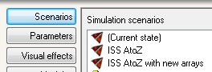
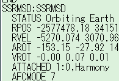
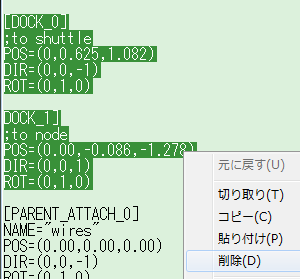

ISS A to Zのインストールと設定
ISS A to Zは、完成した状態のISS（国際宇宙ステーション）を細部に至るまで忠実に再現したMODです。
操作方法については以下を参照してください。
ISS A to Zの操作
ダウンロード
ダウンロードはこちらから。
US ISS A to Z v.3
必要なファイル
このMODにはロシア側のモジュールが含まれていないので、あらかじめISS v3.2というMODをインストールする必要があります。
International Space Station v3.2のインストールと特徴
ISS A to ZはSpacecraft3.dllをベースに作られているので、これもあらかじめインストールしてください。
Spacecraft3.dll+Multistage2.dll+Stage.dllのダウンロード
インストール
ISS v3.2とSpacecraft3のインストールが終わったら、ISS_A2Z_v3.zipを解凍する。
中身をOrbiterのインストールフォルダに上書き。
インストールが終わったら、ISS AtoZというシナリオでゲームを開始して、正常に表示されるか確認してください。
ISS AtoZ with new arraysというシナリオは使えません。

ほかのシナリオで使用する場合は、以下の記事を参照してください。
シナリオファイルの直接編集
カナダアーム
このMODにはカナダアームが付属していますが、やや使いにくいので、必要であればCanadarm2というMODを導入してください。
Canadarm2MODのダウンロード+インストール
ISS A to Zの場合、アームの取り付け位置は以下のようになります。
ATTACHED 1:0,Harmony
ドッキングポートの修正
PMA2（Harmonyモジュールの2番ドッキングポート）の設定に不具合があるため、一部ファイルを書き換える必要があります。
config\spacecraftフォルダにある、PMA2dummy.iniをメモ帳などのテキストエディタで開く。
以下の行をすべて削除して上書き保存する。
[DOCK_0]
;to shuttle
POS=(0,0.625,1.082)
DIR=(0,0,-1)
ROT=(0,1,0)
DOCK_1]
;to node
POS=(0.00,-0.086,-1.278)
DIR=(0,0,1)
ROT=(0,1,0)